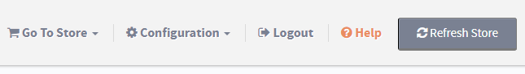

Output Caching is a smart cache system for AspDotNetStorefront. In its current version, it caches the Home page, Product pages, and Entity pages. Output Caching is safe to enable in most cases, and will provide a considerable benefit in page load time reduction. By default this will not cache any core AspDotNetStorefront content that contains customer-specific information, such as the Mini Cart or Account links.
With Output Caching disabled, a large Category page may take 2+ seconds to generate the page, before it is sent to the user. With Output Caching enabled, the same large Category page should only take ~0.5 seconds to load from cache.
This cache system is enabled by default in new stores.If you are upgrading from a version prior to 10.0.18, you can enable this feature in your Store Settings.
Store Settings
'OutputCaching.Enabled' controls if the feature is enabled or disabled.
'OutputCaching.Duration' specifies the duration in seconds that a page should be served from cache, with a default duration of 1 day (86400 seconds).
Cache Duration
A long duration is usually fine, because editing Products or Categories in the Admin console will automatically reset the cache for affected Products or Categories.As long as you make changes to your store via the Admin console, you shouldn't need to reset the cache manually.
If you make changes to Products or Categories using direct database access, or a 3rd party tool such as AIMsi, you will need to manually reset the cache by logging in to your Admin console and clicking the "Refresh Store" button in the top right of the page.

If you don't manually reset the cache in these scenarios, the old Product or Category page will be served to users until the cache naturally expires after the 'OutputCaching.Duration' has passed. If you have only updated the description of a Product, it may be appropriate to let the cache expire naturally. If you have changed the price of a Product, though, it may upset customers if they see a different product price on the cached Product page versus after they have added it to their Shopping Cart, therefore use your discretion when it is prudent to immediately refresh the cache in these situations.
NOTE: If you are logged in as an SuperAdmin/Admin user, you will not see cached pages.To experience cached pages, you will need to log out of your Admin account while you browse the site, as a customer would.
For Advanced Users
There are some scenarios where Output Caching can cause undesirable side effects.
If you have used FTP access to manually modify a View file, and have added code that writes customer-specific information to the page, such as a customer's current shopping cart for use in a marketing plugin or script.
If you have customized a Product or Entity xml package to display customer-specific information
In these cases, the Product or Entity page will be cached with one specific customer's information, and that one specific customer's information will be served to other users who view the same Product or Entity page.
Exclusions
Output Caching will be automatically disabled for an individual page, if that individual page contains any of the following uncommon functionality:
If you use 'SectionTitle' in a custom Product Xml Package
If you use 'SetCookie' in a custom Xml Package Post Processing
For a specific customer, if the customer has a Promotion assigned to their specific email address, and the Promotion has Auto Apply set and Product Discount Alert set
AspDotNetStorefront's implementation of Output Caching uses a custom combination of Microsoft's ASP.NET MVC Output Caching, and a 3rd party NuGet package, MvcDonutCaching. MvcDonutCaching is used to exclude HTML rendered by certain controller actions from a page's cache, such as the AspDotNetStorefront Mini Cart.
Separate caches are used depending on a page's query string parameters, customer level, customer locale, etc.You can find the full definition in AspDotNetStorefront's 'GetVaryByCustomString' function.
In AspDotNetStorefront, any controller or action decorated with the [AdnsfOutputCache] attribute will be cached, and any controller or action not decorated will be automatically excluded from cache.
When a page is served from cache, the controller code does not run, so make sure you are not depending on code to execute for any page you want to cache.There is a workaround: Attributes on the controller do run for every request.For example, the base Product controller code that increments a product view count was moved from the controller to a new [ProductCode] ActionFilter on the controller.The code in the Product controller now only generates the page HTML, and is not executed when the page is served from cache. If you have created a custom controller or action that does not render any customer-specific information, and the page content does not change frequently, it is a good candidate for Output Caching. Just add the [AdnsfOutputCache] attribute to it to enable caching.
Here is some more details and requirements for caching custom controllers or actions:
Controllers or Actions that receive POST requests should not be cached.
Redirects or errors are not cached.Only '200' responses will be stored in the cache.
The [AdnsfOutputCache] ActionFilter should be the first action filter executed.
HttpContext.Response.Filter cannot be used with Output Caching.
RouteData is included in the cache, so don't store customer-specific information there.
Memory usage depends on how much HTML content is on your page, but is usually not very significant.In testing, it was roughly 50mb per 100,000 pages cached.ASP.NET Output Caching will manage its memory usage as well, and evict cache items early if memory is constrained.
If you want to exclude a specific page from cache based on controller or action code, you can set this flag to indicate that the current page response should not be cached: HttpContext.Items[AppLogic.RemoveFromCacheKey] =true
To reset the Output Cache manually, use 'AppLogic.CacheReset()'


 Email This Article
Email This Article Previous Article
Previous Article Next Article
Next Article